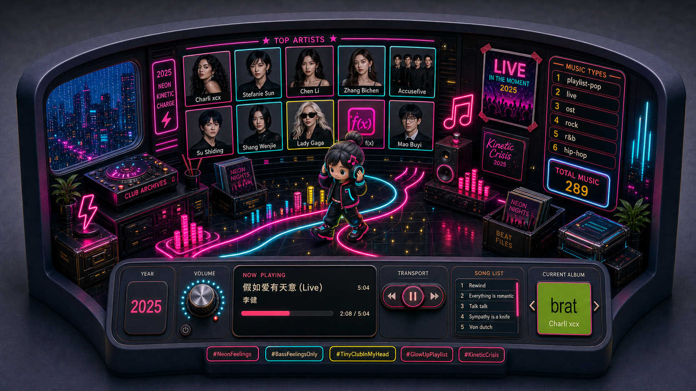

1. FFmpeg + scripted frames
Controlled motion
Best when we want predictable movement: gentle zoom, light sweep, rain, glow, pulse, or parallax-like movement.
Most controllable
Good for final art
Needs frames